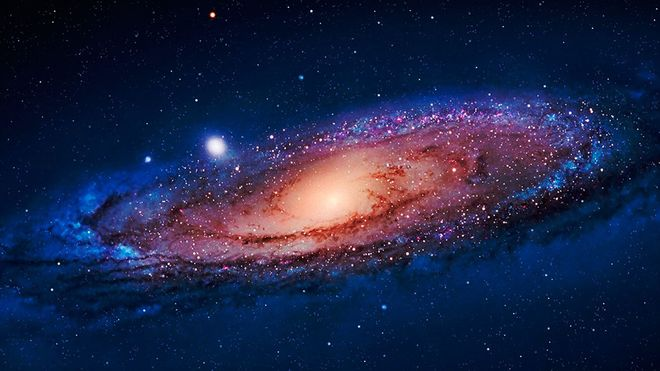

EL UNIVERSO


El Universo es increíblemente grande. Un avión caza actual tardaría más de un millón de años en llegar a la estrella más cercana al Sol. Si viajara a la velocidad de la luz (300.000 km por segundo), tardaría 100.000 años sólo en cruzar nuestra Vía Láctea.
Nadie conoce el tamaño exacto del Universo, porque somos incapaces de ver el borde, si es que lo tiene. Todo lo que sabemos es que el Universo visible tiene al menos 93.000 millones de años luz de ancho (un año luz es la distancia que la luz recorre en un año, por lo tanto, unos 9 billones de km).
El Universo no ha sido siempre del mismo tamaño. Los científicos creen que se inició con un Big Bang, que sucedió hace unos 14.000 millones de años. Desde entonces, el Universo se ha estado expandiendo a gran velocidad. Por lo tanto, la zona de espacio que ahora vemos es miles de millones de veces más grande que cuando el Universo era muy joven. Las galaxias también se alejan entre sí a medida que se expande el espacio entre ellas.
El Universo es todo, sin excepciones. Materia, energía, espacio y tiempo, todo lo que existe forma parte del Universo. También se le llama Cosmos. Las ciencias que lo estudian son varias, en especial dos: la astronomía y la cosmología. El Universo es muy grande, pero quizás no infinito. Si lo fuera, habría infinita materia en infinitas estrellas, y no es así. Al contrario: en cuanto a la materia es, sobre todo, espacio vacío. Hay quien incluso afirma que el Universo en el que vivimos no es real, que es un holograma. Temperaturas del Universo, de frío (azul) a caliente (rojo) El Universo conocido contiene galaxias, cúmulos de galaxias y estructuras de mayor tamaño llamadas supercúmulos, además de materia intergaláctica. Todavía no sabemos con exactitud su magnitud, a pesar de la avanzada tecnología disponible en la actualidad.
LISTA DE PLANETAS
- Venus
- Martes
- Mercurio
- La tierra
- Jupiter
- Urano
- Neptuno